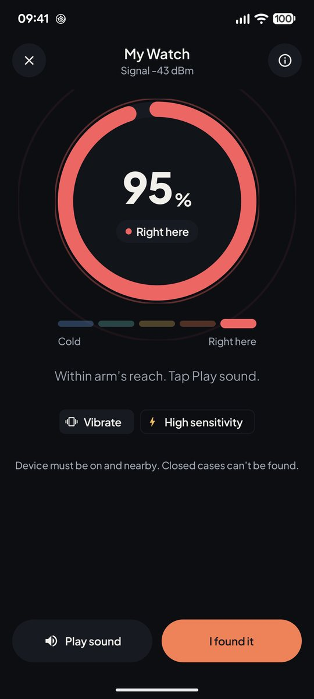
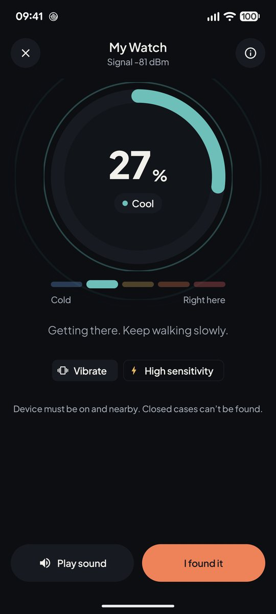
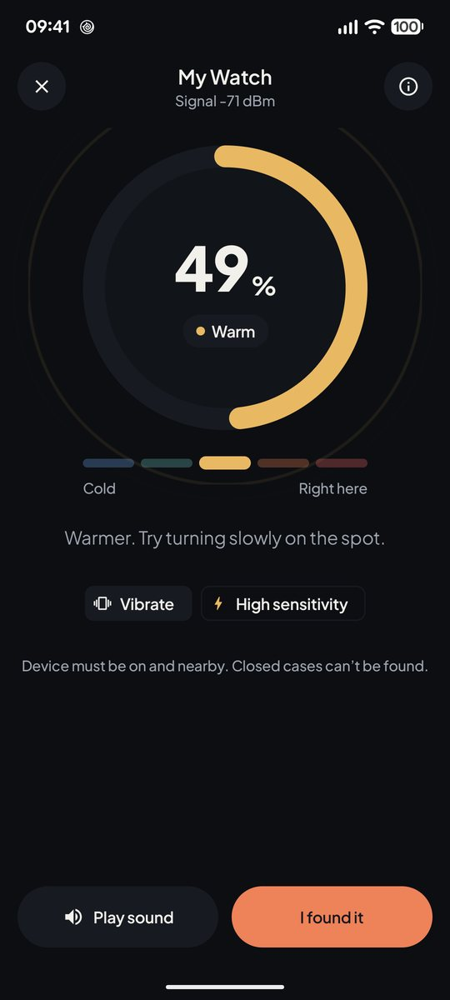
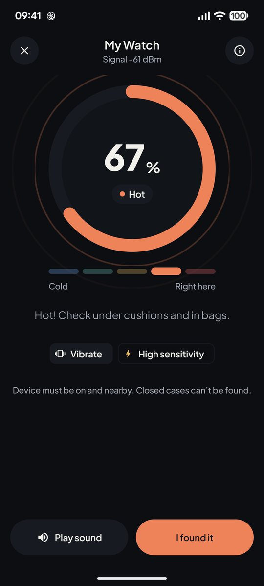
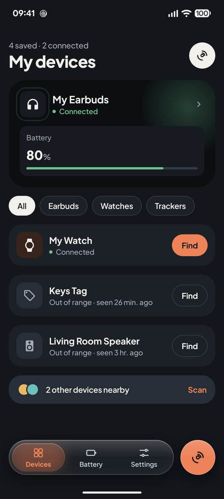
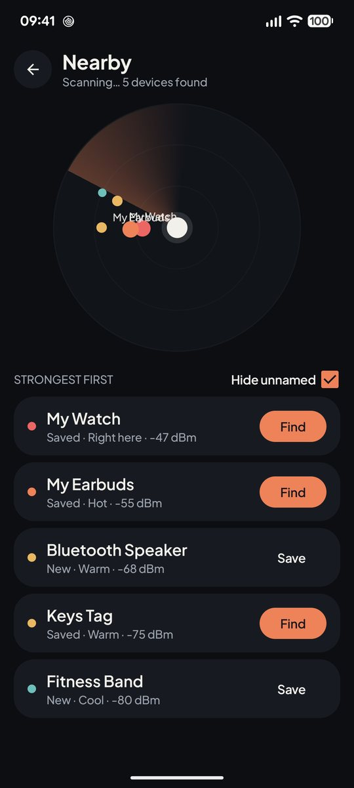
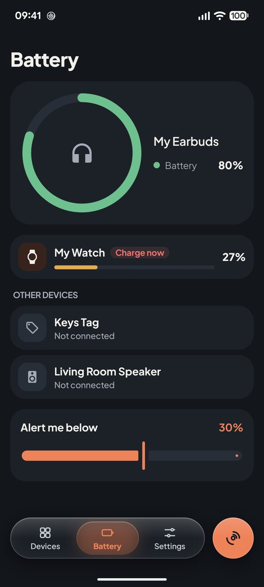

Bluetooth finder for Android
Lost your earbuds? Let's get warmer.
BuddyFind follows the Bluetooth signal of your earbuds, watch or tracker and tells you when you're close. It shows their battery too.




How the search works
Walk around. The ring tells you when you're getting closer.
Pick the device you lost and start walking. BuddyFind listens for its signal, turns it into a heat level and buzzes at every step up.
-
Cool −81 dBm
Getting there. Keep walking slowly.
-
Warm −71 dBm
Warmer. Turn slowly on the spot to find the direction.
-
Hot −61 dBm
Hot. Check under cushions and in bags.
-
Right here −43 dBm
Within arm's reach. Tap Play sound to hear it in your earbuds.
Steady readings. Bluetooth signals jump around. BuddyFind smooths them and never drops more than one level a second, so the ring doesn't flicker from hot to cold while you search. Every level is shown with its name, never as a colour alone.
My devices
Earbuds, watch, keys and speaker in one list.
Save the things you'd hate to lose. BuddyFind shows which ones are connected, which are nearby and when each one was last seen.
- Nearby scan lists what's around you, strongest signal first, so you can save a device or start a search in one tap.
- Last seen records when a device disconnected, even while the app is closed.
- Filters for earbuds, watches and trackers, and a switch to hide nameless signals.



Battery at a glance
A flat battery is the one thing it can't find.
So BuddyFind keeps an eye on it. See the battery of your connected earbuds, headphones and watch in one place.
- Low-battery alerts below the level you choose, from 5 to 50 percent. One alert per charge, no nagging.
- Home screen widgets show your devices' battery, or start a search for one device with a single tap.
- Works while the app is closed. Android wakes BuddyFind briefly when a device connects or reports a new level.
What BuddyFind can find
It listens for Bluetooth, so the device has to be talking.
Switched on, out of the case
Earbuds, headphones, watches, fitness bands, trackers and speakers that are sending a Bluetooth signal.
Inside a closed case
Most earbuds go silent when the lid shuts. Look for the case where you last had them.
Flat battery or far away
A device with no power, or one that's out of Bluetooth range, isn't sending anything to hear.
Bluetooth reaches about a room to a floor. Charge your devices and keep the app handy, and you'll find them fast.
Private by design
No account. No cloud. Your list stays on your phone.
Your saved devices, their battery levels and your settings never leave the phone. BuddyFind never reads your location and never sends device names or Bluetooth addresses anywhere.
Crash reports and anonymous usage statistics help fix problems. They contain no device names or Bluetooth addresses. Details are in the privacy policy.
Speaks your language
Questions
Which devices work with BuddyFind?
Anything that sends a Bluetooth signal: earbuds, headphones, watches, fitness bands, trackers and speakers. It has to be switched on. Battery levels show for devices that share them with Android.
Does it need my location?
On Android 12 and newer it only asks for the Nearby devices permission. Android 11 and older require location access for any Bluetooth scan; BuddyFind still never reads or stores where you are.
Will it drain my phone's battery?
BuddyFind only scans while a search or scan screen is open. Battery alerts and widgets update when a device connects, disconnects or reports a new level, with nothing running in between.
Can it find earbuds in their case?
Usually not. Most earbuds stop sending a signal when the lid is closed. Take them out of the case, or look for the case itself where you last used them.
How much does it cost?
BuddyFind is free to download from Google Play.